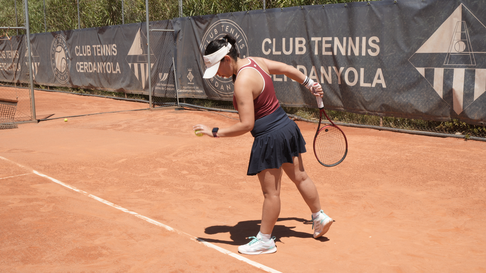

Ore's Tennis Journal
Jugadora, fan y viajera: vivamos el tenis juntos
Soy Ore Soriano, periodista y apasionada por la raqueta, y este es mi diario de pista. Ore's Tennis Journal nació como un espacio cercano y sin filtros para documentar mi camino dentro de la cancha: desde los entrenamientos semanales y el aprendizaje constante como jugadora, hasta las pruebas de equipamiento, los detalles técnicos y todo lo que implica disfrutar y mejorar golpe a golpe. Más allá de la línea de fondo, aquí también vivimos el circuito profesional desde adentro. En este rincón les comparto mis crónicas viajando a grandes torneos como el Barcelona Open o el Mutua Madrid Open, el repaso semanal de los rankings ATP y WTA y las historias más curiosas del tenis mundial. Exploren cada sección para conocer mi historia, revivir mis viajes por las gradas y acompañarme en esta aventura dentro y fuera de la pista.

